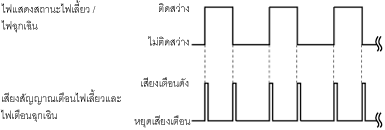

สัญญาณเตือนไฟเลี้ยวและไฟเตือนฉุกเฉิน
id092200020800
จุดประสงค์:
การทำงาน
|
ความถี่ของเสียง (Hz)
|
เตือนเมื่อการส่องสว่างของไฟแสดงสถานะสัญญาณไฟเลี้ยว/ไฟเตือนฉุกเฉิน off → on: 1,400
เตือนเมื่อการส่องสว่างของไฟแสดงสถานะสัญญาณไฟเลี้ยว/ไฟเตือนฉุกเฉิน on → off: 1,300
|
|
ความถี่ของเสียง
|
ต่อเนื่อง
|
|
รูปแบบคลื่น
|
 |
โครงสร้าง
โครงสร้าง / การทำงาน
1. แผงหน้าปัดจะได้รับ (1) สัญญาณขอไฟแสดงสถานะสัญญาณไฟเลี้ยว/ไฟเตือนฉุกเฉินจากโมดูลควบคุมตัวถังด้านหน้า (FBCM)
2. ไมโครคอมพิวเตอร์ของแผงหน้าปัดจะเปิดใช้งานทรานซิสเตอร์ (2) ตามสัญญาณขอไฟแสดงสถานะสัญญาณไฟเลี้ยว/ไฟเตือนฉุกเฉิน
3. เมื่อทรานซิสเตอร์เปิดใช้งาน วงจรกราวด์ที่มีสัญญาณเตือนจะถูกสร้างขึ้นและมีเสียงสัญญาณเตือน (3)
ac5wzn00000617
|
Fail-safe